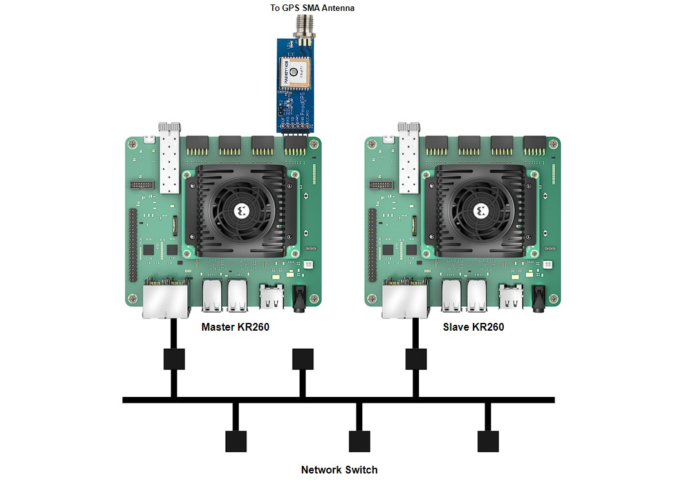

Kria™ KR260 Precision time management
|
Setting up the Board and Application Deployment |
Board Setup and Application Deployment¶
Introduction¶
This document shows the steps to setup the board and run the GPS_1588_PTP application.
Pre-requisite¶
Hardware Requirements¶
KR260 Robotics Starter Kit -2 Nos
KR260 Power Supply & Adapter (Included with KR260 Robotics Starter Kit)
Cat-5e Ethernet Cables - 3 Nos(Included with KR260 Robotics Starter Kit)
USB-A to micro-B Cable (Included with KR260 Robotics Starter Kit)
16GB MicroSD Cards (Included with KR260 Robotics Starter Kit)
Digilent Pmod - GPS Receiver (Sold Separately here)
GPS SMA Antenna (Sold Separately here)
SMA Connector Receptacle (Sold Separately here)
3V 12.5 mm coin cell battery (Optional, Sold Separately here)
Monitor with DP port, keyboard and mouse (Optional - for running application using GUI)
Hardware setup with 2 KR260 boards¶
The setup used for deploying the application is shown below:
Connect the two boards to the same ethernet network via J10C RJ45 PS GEM1 port. Assume one of the KR260 as Master and other as Slave.
Connect JTAG ports of both boards to the host PC
Solder the SMA Connector Receptacle on the header J4 of the Digilent PMOD GPS Receiver
Attach the SMA GPS antenna to SMA connector Receptacle
Optionally add coin cell to GPS module to reduce the amount of time that it takes to acquire the first positional fix
On the Master KR260 board, connect the Digilent PMOD GPS Receiver into the PMOD1 connector, bottom row (J2, 2)
Connect Display port of the both Master and Slave to Monitors to utilize GNOME Desktop
Power on both the boards and follow the next steps in “Booting up Linux”

Booting up Linux¶
Go through Booting Kria Starter Kit Linux to complete minimum setup required to boot Linux on both Master and Slave KR260 boards before continuing with instructions in this page.
Note: Make sure you are using the latest KR260 Starter Kit Boot firmware (2022.2_update 1 or later), otherwise this application may not work.
Downloading and Loading Application Firmware on Master¶
Get the latest GPS_1588_PTP firmware package:
Search package feed for packages compatible with KR260
sudo apt search xlnx-firmware-kr260
An example output is show below
ubuntu@kria:~$ sudo apt search xlnx-firmware-kr260 [sudo] password for ubuntu: Sorting... Done Full Text Search... Done xlnx-firmware-kr260-bist/jammy 0.9~beta1-0xlnx1 arm64 FPGA firmware for Xilinx boards - kr260 bist application xlnx-firmware-kr260-gps-1588-ptp/jammy,now 0.9~beta1-0xlnx1 arm64 FPGA firmware for Xilinx boards - kr260 gps-1588-ptp application xlnx-firmware-kr260-mv-camera/jammy 0.9~beta1-0xlnx1 arm64 FPGA firmware for Xilinx boards - kr260 mv-camera application xlnx-firmware-kr260-perception/jammy 0.9~beta1-0xlnx1 arm64 FPGA firmware for Xilinx boards - kr260 perception application xlnx-firmware-kr260-tsn-rs485pmod/jammy 0.9~beta1-0xlnx1 arm64 FPGA firmware for Xilinx boards - kr260 tsn-rs485pmod application
Install firmware binaries
sudo apt install xlnx-firmware-kr260-gps-1588-ptp
Dynamically load the application firmware:
The firmware consist of bitstream, device tree overlay (dtbo) file. The firmware is loaded dynamically on user request once Linux is fully booted. The xmutil utility can be used for that purpose.
Show the list and status of available acceleration platforms :
sudo xmutil listapps
load
kr260-gps-1588-ptpfirmwaresudo xmutil unloadapp ## Unload existing firmware sudo xmutil loadapp kr260-gps-1588-ptp ## load kr260-gps-1588-ptp
Installing application¶
On Master
# Remove incompatible packages sudo apt remove systemd-timesyncd # Install gps-1588-ptp applications below # Confirm with "Y" when prompted to install new or updated packages. sudo apt install gps-1588-ptp-master
On Slave
# Install gps-1588-ptp applications below # Confirm with "Y" when prompted to install new or updated packages. sudo apt install gps-1588-ptp-slave
Note:
linuxptp,gpsd-tools,gpsd-clients,linuxptp,chrony,python3-tk,ppstoolsare dependencies to GPS_1588_PTP applications that are installed automatically with above commands.
Set PATH to application bin¶
Add following path in environment variable for Xilinx demo application on both Mater and Slave. This application using linux utilities which are only accessible from sudo user. Its recommended to switch to root user with
sudo -ibefore proceeding to below commandssudo -i export PATH=${PATH}:/opt/xilinx/kr260-gps-1588-ptp/bin/
Note: consider adding the above commands to ~/.bashrc to avoid executing on every new shell created.
Verify GPS pulse on Master¶
Run the below command to get the pps node corresponding to the GPS module
sudo dmesg | grep axi:pps_axi_gpio_0 | tail -1
The command output is as follows. From this output, we have the pps2 as the PPS source for GPS module
ubuntu@kria:~$ sudo dmesg | grep axi:pps_axi_gpio_0 | tail -1 [67280.282986] pps pps2: new PPS source axi:pps_axi_gpio_0.-1
Run the below command to verify if the GPS receiver is locked
sudo ppstest /dev/pps2
when the GPS Signal is acquired, you receive one PPS pulse every second and the terminal is as shown below
ubuntu@kria:~$ sudo ppstest /dev/pps2 trying PPS source "/dev/pps2" found PPS source "/dev/pps2" ok, found 1 source(s), now start fetching data... source 0 - assert 1683625047.055531540, sequence: 115 - clear 0.000000000, sequence: 0 source 0 - assert 1683625048.055512261, sequence: 116 - clear 0.000000000, sequence: 0 source 0 - assert 1683625049.055506572, sequence: 117 - clear 0.000000000, sequence: 0 source 0 - assert 1683625050.055499274, sequence: 118 - clear 0.000000000, sequence: 0
Note:: Replace pps2 with the corresponding output from step1
Note:: Make sure the LED on the GPS Module is off while running the application. If its blinking, it means the GPS is not locked and you will not get any PPS signal.
Steps to configure linux utilities to use GPS device as clock source on Master¶
Update the gpsd configuration files with the below content
sudo cp /etc/default/gpsd /etc/default/gpsd.bak sudo sh /opt/xilinx/kr260-gps-1588-ptp/configs/gpsd.sh
Update the configuration for gpsd services
sudo cp /lib/systemd/system/gpsd.service /lib/systemd/system/gpsd.service.bak sudo cp /opt/xilinx/kr260-gps-1588-ptp/configs/gpsd.service /lib/systemd/system/gpsd.service
Update the gpsd.socket file
sudo cp /lib/systemd/system/gpsd.socket /lib/systemd/system/gpsd.socket.bak sudo cp /opt/xilinx/kr260-gps-1588-ptp/configs/gpsd.socket /lib/systemd/system/gpsd.socket
Update the chrony configuration
sudo cp /etc/chrony/chrony.conf /etc/chrony/chrony.conf.bak sudo sh /opt/xilinx/kr260-gps-1588-ptp/configs/chrony.sh
Note:: There configuration steps can be skipped if they are done previously and there is no change in the PPS node.
Run Out Of Box Applications¶
The GPS_1588_PTP application will Synchronize the linux platform System Time with GPS Time and distribute the system time to an another KR260 board using linux PTP tools. The application uses gpsd, chrony daemons and linux ptp utilities.

The application provides 3 ways to interact.
Self-explained Jupyter Notebooks
Automated shell scripts
Simple python GUI on Gnome-Desktop
Note: Ensure to load the GPS_1588_PTP firmware on Master (refer to step-3 from ‘Downloading and Loading Application Firmware on Master’) using
xmutil loadapp kr260-gps-1588-ptpbefore testing example application. If the firmware is already loaded, ignore this step and proceed.
Via Jupyter Notebook¶
User need to run following command to install the package shipped notebooks which reside in
/opt/xilinx/kr260-gps-1588-ptp/share/notebooksto the folder/home/<user>/notebooks.gps-1588-ptp-install.pyThis script also provides more options to install the notebook of current application to specified location.
usage: gps-1588-ptp-install [-h] [-d DIR] [-f]
Script to copy gps-1588-ptp Jupyter notebook to user directory
options:
-h, --help show this help message and exit
-d DIR, --dir DIR Install the Jupyter notebook to the specified directory.
-f, --force Force to install the Jupyter notebook even if the destination directory exists.
On Master, run the below command to launch the notebook. Open the URL in the browser and open master.ipynb file. Follow the steps in the notebook to sync the master with GPS time
sudo jupyter notebook --allow-root --ip=<eth0-ip-address> &
On Slave, run the below command to launch the notebook. Open the URL in the browser and open slave.ipynb file. Follow the steps in the notebook to sync the slave with master
sudo jupyter notebook --allow-root --ip=<eth0-ip-address> &
Via Terminal¶
On Master, run the below command to sync the master with GPS time
sudo gps-1588-ptp-master
Initially the Application prints the current system time on terminal using
timedatectlas shown below. It shows the sync status as no.Local time: Mon 2023-03-20 14:36:08 UTC Universal time: Mon 2023-03-20 14:36:08 UTC RTC time: Thu 1970-01-01 00:04:17 Time zone: Etc/UTC (UTC, +0000) System clock synchronized: no NTP service: inactive RTC in local TZ: no
Later it triggers the GPSD and chrony services to synchronize the system time with the GPS time. The application prints the updated chrony sources which can be verified from the output.
MS Name/IP address Stratum Poll Reach LastRx Last sample =============================================================================== #* GPS 0 4 177 17 +1922ns[ +15us] +/- 5484ns #- NMEA 0 4 177 19 -26ms[ -26ms] +/- 101ms ^? prod-ntp-4.ntp1.ps5.cano> 0 7 0 - +0ns[ +0ns] +/- 0ns ^? prod-ntp-5.ntp4.ps5.cano> 0 7 0 - +0ns[ +0ns] +/- 0ns ^? prod-ntp-3.ntp1.ps5.cano> 0 7 0 - +0ns[ +0ns] +/- 0ns ^? pugot.canonical.com 0 7 0 - +0ns[ +0ns] +/- 0ns ^? alphyn.canonical.com 0 7 0 - +0ns[ +0ns] +/- 0ns ^? 157.245.102.2 0 7 0 - +0ns[ +0ns] +/- 0ns ^? ntp-mumbai.gombadi.com 0 7 0 - +0ns[ +0ns] +/- 0ns ^? 139.59.55.93 0 7 0 - +0ns[ +0ns] +/- 0ns ^? 144.24.146.96 0 7 0 - +0ns[ +0ns] +/- 0ns ^? ntp6.mum-in.hosts.301-mo> 0 7 0 - +0ns[ +0ns] +/- 0ns ^? ntp5.mum-in.hosts.301-mo> 0 7 0 - +0ns[ +0ns] +/- 0ns ^? 165.22.211.200 0 7 0 - +0ns[ +0ns] +/- 0ns ^? ec2-13-126-27-131.ap-sou> 0 7 0 - +0ns[ +0ns] +/- 0ns Reference ID : 47505300 (GPS) Stratum : 1 Ref time (UTC) : Mon Jun 05 06:58:55 2023 System time : 0.000000001 seconds slow of NTP time Last offset : +0.000013462 seconds RMS offset : 0.001221735 seconds Frequency : 8.821 ppm slow Residual freq : +0.126 ppm Skew : 0.101 ppm Root delay : 0.000000001 seconds Root dispersion : 0.000031861 seconds Update interval : 16.0 seconds
Note: The above output shows that, Chrony is using GPS as its Reference ID.
The sync status can be verified from the output of
timedatectl, printed on the terminal.Local time: Mon 2023-06-05 06:59:14 UTC Universal time: Mon 2023-06-05 06:59:14 UTC RTC time: Mon 2023-06-05 06:59:14 Time zone: Etc/UTC (UTC, +0000) System clock synchronized: yes NTP service: active RTC in local TZ: no
The application then triggers phc2sys to update the PHC time with system time.
***** Before triggering phc2sys ****** phc_ctl[1116.247]: clock time is 1679323830.780230286 or Mon Mar 20 14:50:30 2023 ***** After triggering phc2sys the PHC time is updated with system time ****** phc_ctl[1121.254]: clock time is 1685948359.063594014 or Mon Jun 5 06:59:19 2023
start ptp4l utility as Master, to synchronize the slave(s) (PHC time)
On Second KR260 Board acting as slave, run the below command to sync the slave PHC time with Master PHC time.
sudo gps-1588-ptp-slave
Initially the Application prints the current system time and PHC time on terminal using
timedatectl && phc_ctl /dev/ptp1 --getas shown below. It shows the sync status as no.
Local time: Mon 2023-03-20 14:36:08 UTC Universal time: Mon 2023-03-20 14:36:08 UTC RTC time: Thu 1970-01-01 00:04:17 Time zone: Etc/UTC (UTC, +0000) System clock synchronized: no NTP service: inactive RTC in local TZ: no phc_ctl[2241.152]: clock time is 1679324955.989310878 or Mon Mar 20 15:09:15 2023
Then it starts the ptp4l running as slave to align the PHC time from the best master on network.
********************** Ptp4l Application is Running *************************** *************** PHC clock Synchronized with Master node PHC clock*************** phc_ctl[2261.160]: clock time is 1685949488.747679092 or Mon Jun 5 07:18:08 2023Next it triggers the phc2sys, to synchronize the slave system time with its PHC time. The application prints the output of
timedatectlbefore and after running phc2sys to show the sync statusLocal time: Mon 2023-03-20 15:09:36 UTC Universal time: Mon 2023-03-20 15:09:36 UTC RTC time: Thu 1970-01-01 00:37:44 Time zone: Etc/UTC (UTC, +0000) System clock synchronized: no NTP service: active RTC in local TZ: no
After phc2sys application starts ,updated system time showing below:
Local time: Mon 2023-06-05 07:18:13 UTC Universal time: Mon 2023-06-05 07:18:13 UTC RTC time: Mon 2023-06-05 07:18:13 Time zone: Etc/UTC (UTC, +0000) System clock synchronized: yes NTP service: active RTC in local TZ: no
Via Ubuntu GUI¶
On Master, open the terminal in Ubuntu GUI and run the below command to the open GUI
sudo gps-1588-ptp-master -gui
Run the application by clicking on the buttons one after other.

Note Chrony will take 2-3 mins to sync its sources and when this process is going on, the button turns white, user needs to wait until this process is done.
On Slave, open the terminal in Ubuntu GUI and run the below command to the open GUI
sudo gps-1588-ptp-slave -gui
Run the application by clicking on the buttons one after other.

Note: Make sure to run the slave Application, after running the Application on the master side
Next Steps¶
Go back to the KR260 SOM GPS-1588-PTP App Start Page
Copyright (C) 2023 Advanced Micro Devices, Inc.